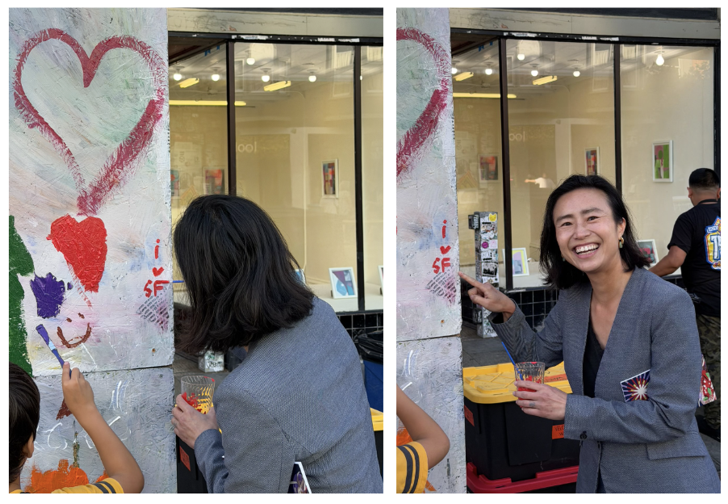

Dear barallies,
Happy Tuesday!
We are now
less than 50 days out from election day. For the next month and a half, we are going to be knocking on doors, making calls, and reaching out to every single voter to explain why Connie will be the best representative for the city we love so much.

Connie helped paint a community art piece on Valencia street.
We <3 SF!
Can you join us for one of our upcoming canvasses?
Saturday 9/19 we will be meeting at Rossi Playground at 10am to canvass in the Richmond with our educator-endorsed candidates for City College Board and the Board of Education.
Saturday we also will be canvassing out of our
Campaign HQ (3043 24th street) at 10am.
Sunday 9/20 we will be meeting at Alamo Square at 10am to canvass in D5!
Can’t make those times? Join us remotely Tuesday and Thursday as we
call voters across the city!
Or join us at a farmers market or night market
this week!
ICYMI: Chan brings history of fighting for less powerful in congressional race!
“That is what putting working families first looks like: protecting their jobs, making their lives more affordable, helping small businesses survive and making sure essential public services are there when people need them.”
Check out the full article in the San Francisco Examiner here
Thanks everyone, we hope to see you at an event soon.
In solidarity,
Team Connie